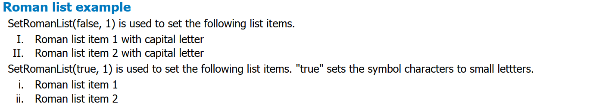

<div id="section">
	<div id="title">
		Generic Code<br/>
		Roman list example
	<hr/>
	</div>
	<div id="image">
		Image Reference<br/>
		
		
	</div>
	<div id="codesinppet1">
		<div>
		Code Snippet of <b>Report.cs</b><br/>
<textarea rows="25" cols="200" multiple="true" >	
	TextReportBuilder textBuilder = new TextReportBuilder(this);	
	textBuilder.DefaultFont = ITItextFontFactory.GetFont("Tahoma", 10, Font.NORMAL);; 
	textBuilder.SetSpaces(5.0f, 1.5f, 5.0f, 0.0f, 1.5f);

	textBuilder.AddSubhead("Roman list example");
	textBuilder.AddItemXML("XMLPara_RomanListExamplePara1");
	textBuilder.SetRomanList(false, 1);
	textBuilder.AddListItemXML("XMLPara_RomanListExampleList1");

	textBuilder.AddItemXML("XMLPara_RomanListExamplePara2");
	textBuilder.SetRomanList(true, 1);
	textBuilder.AddListItemXML("XMLPara_RomanListExampleList2");            

	textBuilder.AddToDocument(_reportDocument);
</textarea>

		</div>
		<div>
			Code Snippet of <b>Report.xml</b><br/>
<textarea rows="20" cols="200" multiple="true" >	
	<paragraph reportID="1" name="Detail" Key="XMLPara_RomanListExamplePara1" >
		<p>SetRomanList(false, 1) is used to set the following list items.</p>
	</paragraph>
	<paragraph reportID="1" name="Detail" Key="XMLPara_RomanListExampleList1" >
		<p>Roman list item 1 with capital letter</p>
		<p>Roman list item 2 with capital letter</p>
	</paragraph>
	<paragraph reportID="1" name="Detail" Key="XMLPara_RomanListExamplePara2" >
		<p>SetRomanList(true, 1) is used to set the following list items. "true" sets the symbol characters to small lettters.</p>
	</paragraph>
	<paragraph reportID="1" name="Detail" Key="XMLPara_RomanListExampleList2" >
		<p>Roman list item 1</p>
		<p>Roman list item 2</p>
	</paragraph>		

</textarea>
		</div>
	</div>
</div>

